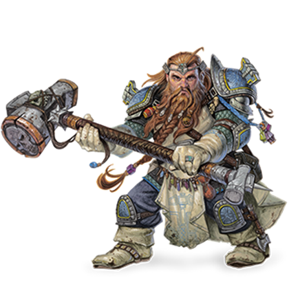

O Bruxo em D&D é um conjurador que faz pactos com entidades poderosas.
Seu poder vem de forças sobrenaturais, como demônios, fadas ou deuses antigos.
Ele conjura magias únicas e utiliza invocações místicas para expandir suas habilidades.
O bruxo combina magia com astúcia, charme e objetivos ocultos.
É um personagem misterioso, marcado por seu pacto e sede de poder.
O Guerreiro em DnD diferente de sua contra-parte o barbaro é um habilidoso
e calculista lutador, e tem em seu repertório artimanhas e estratégias. Ao invés de instintos
ele se baseia em sua experiência e anos de treinamento em combate seja corpo a corpo ou a distancia para
subjulgar seu inimigo.


O Clérigo é um conjurador que é seguidor de uma divinidade.
Seu poder vem de sua fé e ligação com seu deus, que é capaz de conjurar milagres atráves de seu fiel.
Ele conjura curas, bençãos e milagres capazes de proteger seus aliados e ferir seus inimigos.
O clérigo é na maior parte das vezes um personagem fiel e honrado, preso aos suas doutrinas.